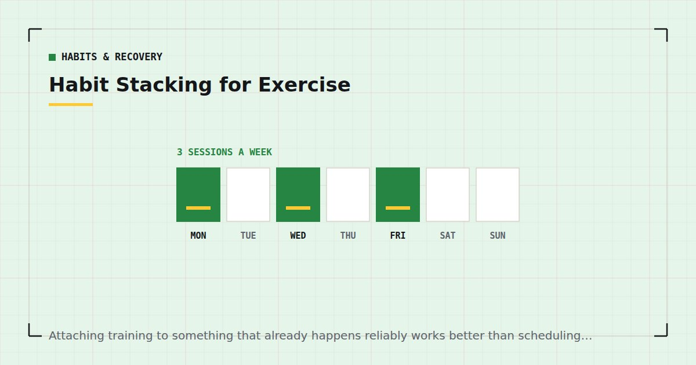

Habits & Recovery
Habit Stacking for Exercise: A Practical System
Attaching training to something that already happens reliably works better than scheduling it, because the thing it already happens after does not require a decision.

Most people schedule exercise by time: half past six, three evenings a week. That works until the first week where half past six is occupied, at which point there is no cue at all and the session quietly does not happen.
Habit stacking replaces the clock with an event. The event already happens without you deciding, so the training inherits its reliability.
Why scheduling fails
A time is a weak cue for three reasons.
It competes. Half past six on a Tuesday is also when dinner needs starting and someone might call. The slot is contested.
It requires you to notice it. A time only functions as a cue if you are watching the clock, which is exactly what you stop doing when busy.
It carries no momentum. Starting from nothing is harder than continuing from something. A cold start at a designated hour is the hardest version of beginning.
An event-based cue has none of these problems. The kettle goes on regardless of your week.
What habit stacking actually is
The structure is: after [existing reliable behaviour], I will [new behaviour].
The underlying idea is that habits are cue-driven. A behaviour becomes automatic through repeated performance in a consistent context, and the context does the remembering for you. Borrowing an existing, well-established context is a shortcut to that.
What you are building is not motivation. You are building an association strong enough that the cue produces the behaviour with very little deliberation, which is precisely what you need on the evenings where deliberation would go the wrong way.
How long it takes
Longer than the figure everyone repeats.
A study by Lally and colleagues tracked people adopting a new daily behaviour and modelled how automaticity developed.1 The median time to reach a plateau of automaticity was 66 days, with substantial individual variation — a range from around 18 days to well over 200 depending on the person and the behaviour.
Two things follow. The commonly quoted "21 days to form a habit" is not supported by this work; it is at the very bottom of the observed range and it applied to simpler behaviours than exercise. And more usefully: if you are six weeks in and it still requires effort, that is normal rather than a sign it is not working.
Complexity matters too. Drinking a glass of water after breakfast automates faster than a thirty-minute workout, and exercise sat at the slower end of the behaviours studied. Expect months rather than weeks.
Choosing a good anchor
Four properties, and the first two matter most.
1. It happens without fail. Not usually — genuinely every time. Getting home from work, putting the kettle on, finishing the school run, the shower you take anyway.
2. It happens at a workable time. An anchor that reliably occurs at eleven at night is reliable and useless for a session that needs a floor and no impact.
3. It ends rather than continues. "After I get home" is a discrete moment. "After work" is a vague region. The sharper the boundary, the better the cue.
4. It is in the right place. An anchor that happens in the kitchen when you train in the bedroom introduces a walk, and the walk is where the decision reappears. This is why storage placement matters so much — see setting up a home gym corner.
Anchors that do not work
"When I have time." Not an event. Time does not arrive; it is allocated.
"When I feel like it." The thing habit stacking exists to route around.
Anchors that vary by day. Finishing work is a poor anchor if that happens anywhere between five and eight.
Anchors with something pleasant immediately after. If your anchor is sitting down on the sofa, you have chosen a cue that competes with the behaviour rather than leading into it. Sitting down is the most common failed anchor by some distance.
Anchors you would have to create. The whole point is borrowing existing reliability. A new alarm is not an anchor; it is another thing to establish.
Start smaller than feels reasonable
The most common error is stacking a thirty-minute session onto a new anchor in week one.
What you are trying to establish first is the link, not the training volume. Once the cue reliably produces you standing on the mat, extending the session is easy. If the link never forms, the length of the session is irrelevant.
So: after the kettle goes on, I do one set of split squats. That is it, for two weeks. It feels absurdly small and that is the design — a behaviour small enough that you will do it on the worst evening of the month is one that survives to become automatic.
Weekly training volume drives adaptation,2 so a token first fortnight costs very little in the scheme of a year, and it buys the thing that determines whether there is a year.
You are building the link, not the workout. The workout is easy to add once the link exists, and impossible to sustain without it.
Worked examples
After I put the kettle on, I do a set of split squats. The kettle takes three minutes and you were standing there anyway.
After I get home and take my shoes off, I put the mat down. Note the behaviour is putting the mat down, not training. The mat being down is what leads to training.
After I put the children to bed, I train before I sit down. The critical word is before. Sitting down first is where this fails — see the 30-minute workout for busy parents.
After I finish my last meeting, I do the desk session. Suits anyone working from home — the session is in the office workout.
Before my morning shower, I do the ten-minute routine. The shower is close to non-negotiable, which makes it an unusually strong anchor — see the 10-minute morning workout.
What happens when you miss one
Less than you would think, which is genuinely reassuring.
The Lally study found that missing a single opportunity to perform the behaviour did not materially affect the habit formation process.1 One lapse does not reset anything.
What appears to matter more is consecutive lapses, which is why the practical rule throughout this site is never miss twice in a row rather than never miss. One missed session is noise; two is where the association starts weakening and the third becomes much easier to miss than the second.
If you have already missed a stretch, the approach is in how to restart after missing two weeks. And if the anchor itself turns out to be the problem, change the anchor rather than trying harder against a bad one — that is a design fix, not a discipline failure.
Where to go next
For the wider behavioural picture, see how to actually stick to a home workout habit. For turning an anchor into a week, see the weekly home workout schedule.
Frequently asked questions
What is habit stacking?
Attaching a new behaviour to an existing reliable one, in the form "after [existing behaviour], I will [new behaviour]". The existing behaviour acts as a cue, so the new one inherits its reliability rather than depending on you remembering or deciding.
How long does it take to form an exercise habit?
A study by Lally and colleagues found a median of 66 days to reach a plateau of automaticity, with a range from around 18 days to well over 200. Exercise sat at the slower end of the behaviours studied, so expect months rather than weeks.
Is the 21-day habit rule true?
Not according to the research most often cited on this. Twenty-one days sits at the very bottom of the observed range and applied to simpler behaviours than exercise. If you are six weeks in and it still takes effort, that is normal.
What makes a good habit anchor?
Something that happens without fail, at a workable time, with a sharp ending rather than a vague one, and in roughly the right place. Putting the kettle on, getting home and taking your shoes off, or the shower you take anyway all work well.
Does missing one workout break the habit?
No. The research found that missing a single opportunity did not materially affect habit formation. Consecutive misses matter more, which is why the practical rule is never to miss twice in a row rather than never to miss.
How small should I start?
Smaller than feels reasonable — one set after the cue, for the first fortnight. You are establishing the link between cue and behaviour, not the training volume. Extending the session is easy once the link exists and impossible if it never forms.
Sources and further reading
- Lally P, van Jaarsveld CHM, Potts HWW, Wardle J. “How are habits formed: Modelling habit formation in the real world.” European Journal of Social Psychology, 2010;40(6):998–1009. doi:10.1002/ejsp.674.
- Schoenfeld BJ, Ogborn D, Krieger JW. “Dose-response relationship between weekly resistance training volume and increases in muscle mass: A systematic review and meta-analysis.” Journal of Sports Sciences, 2017;35(11):1073–1082. PubMed.
- World Health Organization. WHO Guidelines on Physical Activity and Sedentary Behaviour. 2020.
- NHS. Physical activity guidelines for adults aged 19 to 64.
Comments
Comments are not enabled yet. Add a hosted comment embed (Disqus, Commento, Giscus) inside this container when you are ready.